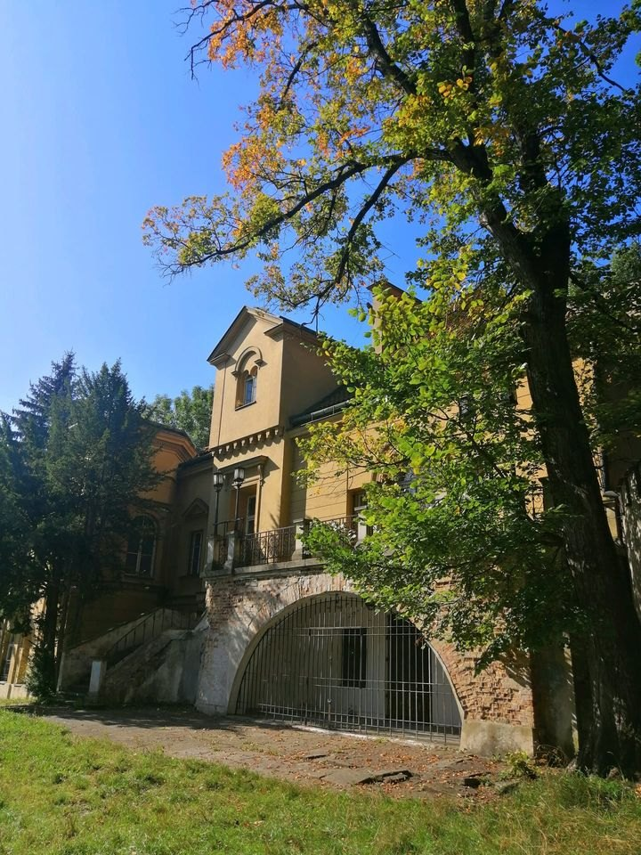
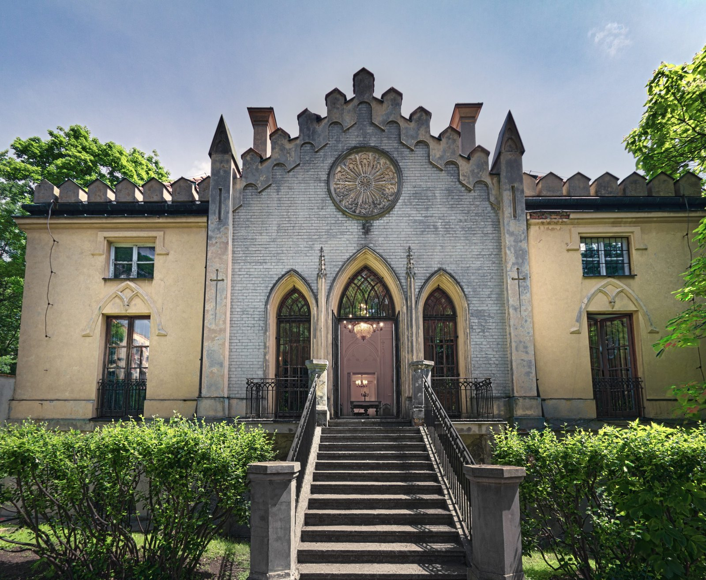

<!doctype html>
<html lang="pl">
<head>
<meta charset="utf-8">
<meta name="viewport" content="width=device-width, initial-scale=1">
<title>O Towarzystwie – Warszawskie Towarzystwo Muzyczne</title>
<link rel="preconnect" href="https://fonts.googleapis.com">
<link href="https://fonts.googleapis.com/css2?family=Newsreader:wght@500;700&family=Inter:wght@400;500&display=swap" rel="stylesheet">
<style>
body{margin:0}
@keyframes wtm-in{from{opacity:0;transform:translateY(18px)}to{opacity:1;transform:none}}
.main > *{animation:wtm-in .6s cubic-bezier(.22,.61,.36,1) both;animation-delay:.42s}
.main > *:nth-child(1){animation-delay:0s}
.main > *:nth-child(2){animation-delay:.07s}
.main > *:nth-child(3){animation-delay:.14s}
.main > *:nth-child(4){animation-delay:.21s}
.main > *:nth-child(5){animation-delay:.28s}
.main > *:nth-child(6){animation-delay:.35s}
.sr{position:absolute;width:1px;height:1px;overflow:hidden;clip:rect(0 0 0 0);white-space:nowrap}
@media (prefers-reduced-motion:reduce){.main > *{animation:none !important}}
a{color:#111;text-decoration:none}a:hover{text-decoration:underline}
@media (max-width:860px){
.shell{flex-direction:column !important}
.side{width:auto !important;border-right:0 !important;border-bottom:1px solid var(--line);padding:20px 24px !important}
.side nav{margin:12px 0 !important}
.main{padding:24px !important}
.galmain{height:320px !important}
}
/* telefony i tablety */
.nav-toggle{display:none}
.nav-toggle .i-close{display:none}
.main a[href^="mailto:"]{overflow-wrap:anywhere}
.main img{max-width:100%}
@media (max-width:860px){
.side{flex-direction:column !important;justify-content:flex-start !important;padding:12px 20px !important}
.side > div:first-child{display:flex;flex-wrap:wrap;align-items:center;justify-content:space-between;gap:8px}
.side > div:first-child > a:first-child img{width:64px !important}
.nav-toggle{display:inline-flex !important;align-items:center;gap:10px;min-height:44px;padding:0 16px;border:1px solid #111111;background:#ffffff;color:#111111;font:500 14px/1 'Inter',Helvetica,Arial,sans-serif;letter-spacing:.04em;cursor:pointer}
.side.is-open .nav-toggle .i-menu{display:none}
.side.is-open .nav-toggle .i-close{display:block}
.side nav{display:none;width:100%;margin:8px 0 0 !important;border-top:1px solid var(--line)}
.side.is-open nav{display:block}
.side nav a{padding:14px 0 !important;border-bottom:1px solid var(--line);font-size:16px !important}
.side > div:last-child{display:none !important}
.side.is-open > div:last-child{display:flex !important;align-items:center;justify-content:space-between;padding:6px 0 2px}
.main{padding:28px 20px 40px !important}
}
@media (max-width:860px) and (prefers-reduced-motion:no-preference){.side.is-open nav{animation:wtm-in .25s ease both}}
</style>
</head>
<body>
<div id="app"></div>
<script type="text/x-template" id="tpl">
<div class="shell" style="--line: {{lineColor}}; display: flex; min-height: 1000px; box-sizing: border-box; background: #ffffff; color: #111111; font-family: 'Inter', Helvetica, Arial, sans-serif">
<aside class="side {{navCls}}" style="width: 200px; flex-shrink: 0; box-sizing: border-box; border-right: 1px solid var(--line); padding: 64px 32px 24px; display: flex; flex-direction: column; justify-content: space-between">
<div>
<a href="index.html" aria-label="Warszawskie Towarzystwo Muzyczne – strona główna" style="display: block"></a>
<button type="button" class="nav-toggle" onClick="{{ toggleNav }}" aria-expanded="{{navExpanded}}" aria-controls="menu-glowne"><svg class="i-menu" width="18" height="18" viewBox="0 0 24 24" aria-hidden="true"><path d="M4 7h16M4 12h16M4 17h16" stroke="currentColor" stroke-width="2" fill="none" stroke-linecap="round"/></svg><svg class="i-close" width="18" height="18" viewBox="0 0 24 24" aria-hidden="true"><path d="M6 6l12 12M18 6L6 18" stroke="currentColor" stroke-width="2" fill="none" stroke-linecap="round"/></svg><span>{{navLabel}}</span></button>
<nav id="menu-glowne" style="margin-top: 36px" aria-label="Menu główne">
<a href="o-towarzystwie.html" aria-current="page" style="display: block; padding: 12px 0; font-size: 15px; font-weight: 500; text-decoration: underline; text-underline-offset: 6px">O Towarzystwie</a>
<a href="kalendarz.html" style="display: block; padding: 12px 0; font-size: 15px">Kalendarz</a>
<a href="historia.html" style="display: block; padding: 12px 0; font-size: 15px">Historia</a>
<a href="biblioteka.html" style="display: block; padding: 12px 0; font-size: 15px">Biblioteka</a>
<a href="akademia.html" style="display: block; padding: 12px 0; font-size: 15px">Akademia Warszawskiego Towarzystwa Muzycznego</a>
<a href="wspolpraca.html" style="display: block; padding: 12px 0; font-size: 15px">Współpraca</a>
</nav>
</div>
<div>
<div style="display: flex; margin-left: -12px">
<a href="https://www.facebook.com/warszawskietowarzystwomuzyczne1871/" target="_blank" rel="noopener" aria-label="Facebook – Warszawskie Towarzystwo Muzyczne (otwiera się w nowej karcie)" style="display: flex; align-items: center; justify-content: center; width: 44px; height: 44px"><svg width="18" height="18" viewBox="0 0 24 24" aria-hidden="true"><path fill="currentColor" d="M13 22v-8h2.7l.5-3.2H13V8.7c0-1 .4-1.7 1.8-1.7h1.5V4.2C16 4.1 15 4 14 4c-2.5 0-4.2 1.5-4.2 4.3v2.5H7V14h2.8v8z"/></svg></a>
<a href="#" aria-label="Instagram" style="display: flex; align-items: center; justify-content: center; width: 44px; height: 44px"><svg width="18" height="18" viewBox="0 0 24 24" aria-hidden="true"><rect x="3.5" y="3.5" width="17" height="17" rx="5" fill="none" stroke="currentColor" stroke-width="2"/><circle cx="12" cy="12" r="4" fill="none" stroke="currentColor" stroke-width="2"/><circle cx="17.2" cy="6.8" r="1.2" fill="currentColor"/></svg></a>
</div>
<a href="kontakt.html" style="display: inline-flex; align-items: center; min-height: 44px; font-size: 13px; letter-spacing: 0.04em; font-weight: 500; text-decoration: underline; text-underline-offset: 5px">Kontakt</a>
</div>
</aside>
<main class="main" style="flex: 1; min-width: 0; box-sizing: border-box; padding: 64px 40px 56px 30px">
<h1 style="margin: 0; font-family: 'Newsreader', Georgia, serif; font-weight: 700; font-size: clamp(30px, 4.6vw, 66px); line-height: 1.05; letter-spacing: -0.01em; color: #0d0d0d">O TOWARZYSTWIE</h1>
<p style="margin: 10px 0 0; font-family: 'Newsreader', Georgia, serif; font-weight: 500; font-size: clamp(18px, 2vw, 28px); line-height: 1.2">Warszawskie Towarzystwo Muzyczne od 1871 roku</p>

<section style="display: flex; flex-wrap: wrap; align-items: flex-start; gap: 48px; margin-top: 40px">
<div style="flex: 999 1 420px; min-width: 0; max-width: 700px">
<p style="margin: 0; font-family: 'Newsreader', Georgia, serif; font-weight: 500; font-size: clamp(22px, 2.4vw, 32px); line-height: 1.4"><strong style="font-weight: 700">Warszawskie Towarzystwo Muzyczne im. Stanisława Moniuszki</strong> jest stowarzyszeniem działającym na rzecz upowszechniania kultury muzycznej poprzez organizowanie koncertów, wystaw oraz audycji dla dzieci i młodzieży, działalność edukacyjną w zakresie szkoły muzycznej pierwszego stopnia, prowadzi także Bibliotekę Muzeum i Archiwum.</p>
<div style="display: flex; flex-wrap: wrap; gap: 4px 28px; margin-top: 28px">
<a href="historia.html" style="display: inline-flex; align-items: center; min-height: 44px; font-size: 12px; font-weight: 500; letter-spacing: 0.08em; text-decoration: underline; text-underline-offset: 5px">HISTORIA TOWARZYSTWA</a>
<a href="kalendarz.html" style="display: inline-flex; align-items: center; min-height: 44px; font-size: 12px; font-weight: 500; letter-spacing: 0.08em; text-decoration: underline; text-underline-offset: 5px">KALENDARZ KONCERTÓW</a>
<a href="kontakt.html" style="display: inline-flex; align-items: center; min-height: 44px; font-size: 12px; font-weight: 500; letter-spacing: 0.08em; text-decoration: underline; text-underline-offset: 5px">KONTAKT</a>
</div>
</div>

</section>

<section id="palac" aria-label="Pałac Szustra" style="margin-top: 72px">
<h2 style="margin: 0 0 20px; font-family: 'Newsreader', Georgia, serif; font-weight: 700; font-size: 32px">Pałac Szustra</h2>
<div style="display: flex; flex-wrap: wrap; align-items: baseline; gap: 6px 32px; margin: 0 0 28px; padding: 14px 0; border-top: 1px solid #111111; border-bottom: 1px solid var(--line)">
<div style="font-size: 11px; letter-spacing: 0.07em; text-transform: uppercase">Siedziba i sala koncertowa</div>
<div style="font-size: 15px; line-height: 1.7">ul. Morskie Oko 2, 02-511 Warszawa · tel. <a href="tel:+48228495651" style="text-decoration: underline">22 849 56 51</a> · <a href="tel:+48509019934" style="text-decoration: underline">509 019 934</a></div>
<a href="https://www.google.com/maps/search/?api=1&amp;query=Pa%C5%82ac+Szustra%2C+Morskie+Oko+2%2C+Warszawa" target="_blank" rel="noopener" style="display: inline-flex; align-items: center; min-height: 44px; font-size: 12px; font-weight: 500; letter-spacing: 0.08em; text-decoration: underline; text-underline-offset: 5px">OTWÓRZ W MAPACH GOOGLE</a>
</div>
<div style="display: flex; flex-wrap: wrap; align-items: flex-start; gap: 40px">
<div style="flex: 1 1 380px; min-width: 0; max-width: 620px">
<p style="margin: 0 0 16px; font-family: 'Newsreader', Georgia, serif; font-weight: 500; font-size: 22px; line-height: 1.45">Od 5 września 1966 roku Pałac Szustra przy ul. Morskie Oko 2 jest pierwszą własną siedzibą Warszawskiego Towarzystwa Muzycznego. W 2026 roku WTM obchodzi tu 60 lat obecności.</p>
<p style="margin: 0 0 14px; font-size: 15px; line-height: 1.7">Zabytkowa budowla na Mokotowie powstała w latach 1772–1775 dla Izabeli z Czartoryskich Lubomirskiej. W 1845 roku Henryk Marconi nadał jej neogotycki charakter, w 1944 roku pałac spłonął, a w latach 1962–1965 został odbudowany. W 1965 roku wpisano go do rejestru zabytków.</p>
<p style="margin: 0 0 14px; font-size: 15px; line-height: 1.7">Dziś odbywają się tu koncerty w cyklach miesięcznych: muzyka dawna i klasyczna, operetka, jazz, pieśń i recitale fortepianowe. Stałe cykle to „Jazz not Jazz – Salon Morskie Oko”, latem „Letnie Koncerty Fortepianowe” (soboty lipca i sierpnia, godz. 16.00, wstęp wolny) oraz koncerty plenerowe w sąsiednim Parku Morskie Oko (niedziele, godz. 12.00, wstęp wolny). W pałacu działa także Akademia WTM.</p>
<div style="display: flex; flex-wrap: wrap; gap: 4px 24px; margin-top: 8px">
<a href="kalendarz.html" style="display: inline-flex; align-items: center; min-height: 44px; font-size: 12px; font-weight: 500; letter-spacing: 0.08em; text-decoration: underline; text-underline-offset: 5px">KALENDARZ KONCERTÓW</a>
<a href="akademia.html" style="display: inline-flex; align-items: center; min-height: 44px; font-size: 12px; font-weight: 500; letter-spacing: 0.08em; text-decoration: underline; text-underline-offset: 5px">AKADEMIA WTM</a>
</div>
</div>

</div>
<div id="zdjecia-palacu" style="margin-top: 40px">
<div style="font-size: 11px; letter-spacing: 0.07em; text-transform: uppercase; margin-bottom: 12px">Zdjęcia</div>
<div style="position: relative">
<div class="galmain" style="height: 560px; box-sizing: border-box; display: flex; align-items: center; justify-content: center; background: #f3efe6; border: 1px solid var(--line); overflow: hidden">

</div>
<div style="display: flex; flex-wrap: wrap; align-items: center; justify-content: space-between; gap: 8px 16px; margin-top: 10px">
<p role="status" aria-live="polite" style="margin: 0; font-family: 'Newsreader', Georgia, serif; font-weight: 500; font-size: 20px">{{ph.cap}}</p>
<div style="display: flex; align-items: center; gap: 8px">
<button type="button" onClick="{{ prevPh }}" aria-label="Poprzednie zdjęcie" style="width: 44px; height: 44px; border: 1px solid #111111; background: #ffffff; color: #111111; font-size: 18px; cursor: pointer">←</button>
<span style="min-width: 52px; text-align: center; font-size: 13px">{{phCount}}</span>
<button type="button" onClick="{{ nextPh }}" aria-label="Następne zdjęcie" style="width: 44px; height: 44px; border: 1px solid #111111; background: #ffffff; color: #111111; font-size: 18px; cursor: pointer">→</button>
</div>
</div>
</div>
<div style="display: flex; flex-wrap: wrap; gap: 10px; margin-top: 18px">
<sc-for list="{{thumbs}}" as="t" hint-placeholder-count="4">
<button type="button" onClick="{{ t.pick }}" aria-label="{{t.label}}" aria-pressed="{{t.pressed}}" style="width: 150px; height: 96px; padding: 0; border: {{t.border}}; background: #f3efe6; cursor: pointer; overflow: hidden"></button>
</sc-for>
</div>
</div>
</section>

<section aria-label="Działalność" style="margin-top: 72px">
<h2 style="margin: 0 0 20px; font-family: 'Newsreader', Georgia, serif; font-weight: 700; font-size: 32px">Czym się zajmujemy</h2>
<div style="display: flex; flex-wrap: wrap; gap: 36px 32px">
<div style="flex: 1 1 260px; min-width: 0; box-sizing: border-box; padding-top: 14px; border-top: 1px solid #111111">
<div style="font-size: 11px; letter-spacing: 0.07em; text-transform: uppercase">01</div>
<h3 style="margin: 8px 0 10px; font-family: 'Newsreader', Georgia, serif; font-weight: 700; font-size: 24px; line-height: 1.2">Koncerty</h3>
<p style="margin: 0 0 8px; font-size: 15px; line-height: 1.6">Cykle miesięczne w Pałacu Szustra: muzyka dawna i klasyczna, operetka, jazz, pieśń i recitale fortepianowe.</p>
<a href="kalendarz.html" style="display: inline-flex; align-items: center; min-height: 44px; font-size: 12px; font-weight: 500; letter-spacing: 0.08em; text-decoration: underline; text-underline-offset: 5px">KALENDARZ</a>
</div>
<div style="flex: 1 1 260px; min-width: 0; box-sizing: border-box; padding-top: 14px; border-top: 1px solid #111111">
<div style="font-size: 11px; letter-spacing: 0.07em; text-transform: uppercase">02</div>
<h3 style="margin: 8px 0 10px; font-family: 'Newsreader', Georgia, serif; font-weight: 700; font-size: 24px; line-height: 1.2">Wystawy</h3>
<p style="margin: 0 0 8px; font-size: 15px; line-height: 1.6">Wystawy poświęcone historii Towarzystwa i polskiej kulturze muzycznej, m.in. „Pierwszy akord” z 2025 roku.</p>
<a href="historia.html" style="display: inline-flex; align-items: center; min-height: 44px; font-size: 12px; font-weight: 500; letter-spacing: 0.08em; text-decoration: underline; text-underline-offset: 5px">HISTORIA</a>
</div>
<div style="flex: 1 1 260px; min-width: 0; box-sizing: border-box; padding-top: 14px; border-top: 1px solid #111111">
<div style="font-size: 11px; letter-spacing: 0.07em; text-transform: uppercase">03</div>
<h3 style="margin: 8px 0 10px; font-family: 'Newsreader', Georgia, serif; font-weight: 700; font-size: 24px; line-height: 1.2">Audycje dla dzieci i młodzieży</h3>
<p style="margin: 0 0 8px; font-size: 15px; line-height: 1.6">Audycje umuzykalniające dla dzieci przedszkolnych i szkolnych, organizowane od przełomu lat 50. i 60. XX wieku.</p>
</div>
<div style="flex: 1 1 260px; min-width: 0; box-sizing: border-box; padding-top: 14px; border-top: 1px solid #111111">
<div style="font-size: 11px; letter-spacing: 0.07em; text-transform: uppercase">04</div>
<h3 style="margin: 8px 0 10px; font-family: 'Newsreader', Georgia, serif; font-weight: 700; font-size: 24px; line-height: 1.2">Edukacja</h3>
<p style="margin: 0 0 8px; font-size: 15px; line-height: 1.6">Działalność edukacyjna w zakresie szkoły muzycznej pierwszego stopnia oraz Akademia WTM, czyli lekcje dla dzieci, młodzieży i dorosłych.</p>
<a href="akademia.html" style="display: inline-flex; align-items: center; min-height: 44px; font-size: 12px; font-weight: 500; letter-spacing: 0.08em; text-decoration: underline; text-underline-offset: 5px">AKADEMIA</a>
</div>
<div style="flex: 1 1 260px; min-width: 0; box-sizing: border-box; padding-top: 14px; border-top: 1px solid #111111">
<div style="font-size: 11px; letter-spacing: 0.07em; text-transform: uppercase">05</div>
<h3 style="margin: 8px 0 10px; font-family: 'Newsreader', Georgia, serif; font-weight: 700; font-size: 24px; line-height: 1.2">Biblioteka, Muzeum i Archiwum</h3>
<p style="margin: 0 0 8px; font-size: 15px; line-height: 1.6">Zbiory dokumentujące polską kulturę muzyczną XIX wieku, ze szczególnym uwzględnieniem życia muzycznego Warszawy.</p>
<a href="biblioteka.html" style="display: inline-flex; align-items: center; min-height: 44px; font-size: 12px; font-weight: 500; letter-spacing: 0.08em; text-decoration: underline; text-underline-offset: 5px">BIBLIOTEKA</a>
</div>
</div>
</section>

<section aria-label="Najważniejsze daty" style="margin-top: 72px">
<h2 style="margin: 0 0 20px; font-family: 'Newsreader', Georgia, serif; font-weight: 700; font-size: 32px">Najważniejsze daty</h2>
<div style="display: flex; flex-wrap: wrap; gap: 24px 32px">
<div style="flex: 1 1 260px; min-width: 0; box-sizing: border-box; padding-top: 14px; border-top: 1px solid #111111">
<div style="font-family: 'Newsreader', Georgia, serif; font-weight: 700; font-size: 44px; line-height: 1">1871</div>
<p style="margin: 10px 0 0; font-size: 15px; line-height: 1.6">Powstaje Towarzystwo Muzyczne Warszawskie, a wraz z nim biblioteka i czytelnia muzyczna.</p>
</div>
<div style="flex: 1 1 260px; min-width: 0; box-sizing: border-box; padding-top: 14px; border-top: 1px solid #111111">
<div style="font-family: 'Newsreader', Georgia, serif; font-weight: 700; font-size: 44px; line-height: 1">1951</div>
<p style="margin: 10px 0 0; font-size: 15px; line-height: 1.6">W 80. rocznicę powstania Towarzystwo otrzymuje imię Stanisława Moniuszki.</p>
</div>
<div style="flex: 1 1 260px; min-width: 0; box-sizing: border-box; padding-top: 14px; border-top: 1px solid #111111">
<div style="font-family: 'Newsreader', Georgia, serif; font-weight: 700; font-size: 44px; line-height: 1">1966</div>
<p style="margin: 10px 0 0; font-size: 15px; line-height: 1.6">Otwarcie pierwszej własnej siedziby w Pałacu Szustra przy ul. Morskie Oko 2.</p>
</div>
</div>
<a href="historia.html" style="display: inline-flex; align-items: center; min-height: 44px; font-size: 12px; font-weight: 500; letter-spacing: 0.08em; text-decoration: underline; text-underline-offset: 5px; margin-top: 16px">PEŁNE KALENDARIUM</a>
</section>
<footer style="margin-top: 72px; padding-top: 28px; border-top: 1px solid #111111; display: flex; flex-wrap: wrap; justify-content: space-between; gap: 24px 48px; font-size: 13px; line-height: 1.6">
<div><div style="font-weight: 500">Warszawskie Towarzystwo Muzyczne im. Stanisława Moniuszki</div><div>Pałac Szustra, ul. Morskie Oko 2, 02-511 Warszawa</div></div>
<div><div>tel. <a href="tel:+48228495651">22 849 56 51</a> · kom. <a href="tel:+48509019934">509 019 934</a></div><div><a href="mailto:wtm@wtm.org.pl">wtm@wtm.org.pl</a></div></div>
<nav aria-label="Stopka" style="display: flex; flex-wrap: wrap; align-items: flex-start; gap: 0 28px">
<a href="kontakt.html" style="display: inline-flex; align-items: center; min-height: 44px; font-size: 12px; font-weight: 500; letter-spacing: 0.08em; text-decoration: underline; text-underline-offset: 5px">KONTAKT</a>
<a href="wsparcie.html" style="display: inline-flex; align-items: center; min-height: 44px; font-size: 12px; font-weight: 500; letter-spacing: 0.08em; text-decoration: underline; text-underline-offset: 5px">WSPARCIE</a>
</nav>
</footer>
</main>
</div>
</script>
<script src="wtm.js"></script>
<script>
class Component extends DCLogic {
renderVals() {
const navOpen = !!(this.state && this.state.navOpen);
return Object.assign(this.pageVals(), { navCls: navOpen ? 'is-open' : '', navExpanded: navOpen ? 'true' : 'false', navLabel: navOpen ? 'Zamknij' : 'Menu', toggleNav: () => this.setState({ navOpen: !navOpen }) });
}
pageVals() {
const s = Object.assign({ photo: 0 }, this.state || {});
const PH = [
{ src: 'obrazy/palac-fasada.jpg', alt: 'Pałac Szustra – neogotycka fasada z wejściem i schodami', cap: 'Pałac Szustra – fasada z wejściem głównym', fit: 'cover', pos: '50% 40%' },
{ src: 'obrazy/palac-staw.jpg', alt: 'Pałac Szustra widziany zza stawu, jesienią', cap: 'Pałac Szustra widziany zza stawu', fit: 'contain', pos: '50% 50%' },
{ src: 'obrazy/kwartet.jpg', alt: 'Kwartet smyczkowy w sali pałacowej', cap: 'Kwartet smyczkowy w sali pałacowej', fit: 'contain', pos: '50% 50%' },
{ src: 'obrazy/fortepian.jpg', alt: 'Pianista przy fortepianie', cap: 'Recital fortepianowy', fit: 'cover', pos: '50% 60%' }
];
const n = PH.length;
return {
lineColor: this.props.lineColor ?? '#d9d1c0',
ph: PH[s.photo], phCount: (s.photo + 1) + ' / ' + n,
prevPh: () => this.setState({ photo: (s.photo + n - 1) % n }),
nextPh: () => this.setState({ photo: (s.photo + 1) % n }),
thumbs: PH.map((p, i) => ({ src: p.src, label: 'Zdjęcie ' + (i + 1) + ': ' + p.cap, pressed: i === s.photo ? 'true' : 'false', border: i === s.photo ? '3px solid #111111' : '3px solid transparent', pick: () => this.setState({ photo: i }) }))
};
}
}
WTM.mount(Component, {"lineColor": "#d9d1c0"});
</script>
</body>
</html>
